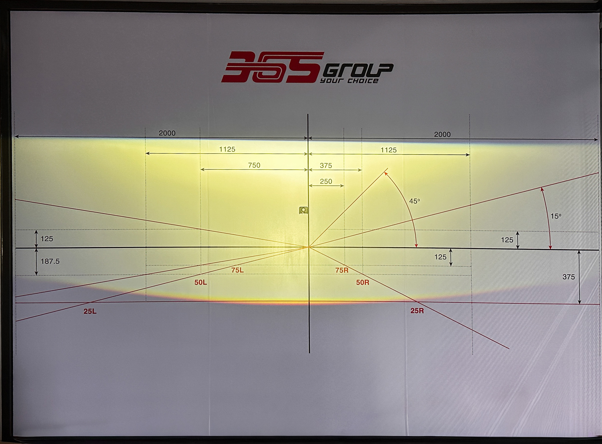
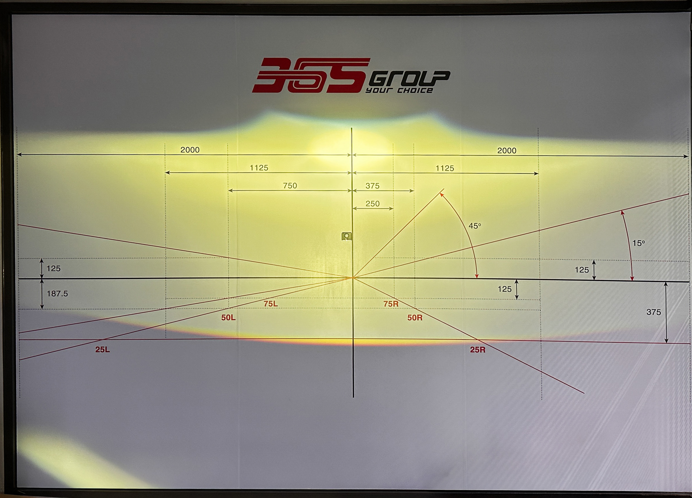

Bi gầm GTR G1 Turbo V2: Thông số, hiệu năng và quy trình lắp đặt
- Là gì: Bi gầm LED chuyên dụng thay thế cụm đèn gầm/sương mù nguyên bản.
- Phù hợp với ai: Người thường xuyên đi đêm, đường đèo, khu vực sương mù hoặc mưa lớn.
- Thông số chính: Công suất Cos khoảng 45W, Pha khoảng 75W, nhiệt màu 4800K + mắt trợ Pha 3000K.
- Giá bán: 6.000.000 VNĐ/bộ (chưa VAT).
- Bảo hành: Bảo hành điện tử 24 tháng.
1. GTR G1 Turbo V2 là gì và phù hợp với nhu cầu nào?
Bi gầm GTR G1 Turbo V2 là dòng đèn bi gầm LED chuyên dụng được thiết kế để thay thế cho cụm đèn gầm hoặc đèn sương mù nguyên bản. Thiết bị sở hữu cấu hình 6(big)+1+1 Osram, mang lại mức công suất Cos khoảng 45W và công suất Pha khoảng 75W, hỗ trợ bổ sung vùng sáng tầm thấp ở cự ly gần và tầm thấp.
Sản phẩm hướng đến cấu hình nhiệt màu 4800K tổng thể kết hợp cùng mắt trợ Pha 3000K (vàng đậm). Nhờ vậy, thiết bị đặc biệt phù hợp cho những người dùng thường xuyên phải đi đêm, đi tỉnh, đi qua đường đèo, gặp thời tiết mưa hoặc sương mù. Đây là giải pháp nâng cấp giúp bổ sung vùng sáng tầm thấp nhằm hỗ trợ cải thiện tầm nhìn mà không can thiệp quá nhiều vào cụm đèn chính của phương tiện.
Tuy nhiên, hiệu quả thực tế của sản phẩm phụ thuộc rất nhiều vào vị trí lắp đặt trên từng dòng xe, việc sử dụng đúng pát chuyên dụng cũng như kỹ thuật đi dây hệ thống điện an toàn. Do đó, phương tiện cần được kiểm tra xe trực tiếp trước khi lắp ráp và phải được căn chỉnh sau thi công để kiểm tra mặt cắt ánh sáng, hỗ trợ chiếu sáng hiệu quả và hỗ trợ hạn chế chói trong điều kiện phù hợp.
| Nhu cầu sử dụng | Khả năng đáp ứng của GTR G1 Turbo V2 |
|---|---|
| Di chuyển mưa/sương mù/đường đèo | Phù hợp (Nhờ mắt trợ Pha 3000K và dải màu 4800K) |
| Di chuyển cao tốc/đường trường | Phù hợp (Nhờ chế độ Pha gom tại tâm Elip) |
| Cải thiện ánh sáng không can thiệp đèn chính | Phù hợp (Lắp ráp ở vị trí hốc gầm dưới cùng) |
2. Hiệu năng chiếu sáng: Cos khoảng 45W, Pha khoảng 75W và nhiệt màu 4800K/3000K
Ở chế độ Cos (Low Beam), thiết bị hoạt động với công suất khoảng 45W. Đặc điểm của ánh sáng Cos trên bi gầm là vùng sáng hướng đến khả năng bao quát khu vực gần và tầm thấp, trải đều trên mặt đường ở khoảng cách gần, nhằm mục đích bao quát tầm nhìn tầm thấp ở khu vực ngay trước mũi xe và hai bên mép đường. Việc căn chỉnh đường cắt sáng (cut-off line) đúng độ cao sẽ hỗ trợ hạn chế tình trạng ánh sáng hắt lên cao gây chói mắt cho người lái xe ngược chiều.
Khi kích hoạt chế độ Pha (High Beam), tổng công suất của hệ thống đạt khoảng 75W nhờ sự bổ sung của cụm 1+1 chip LED Osram trợ Pha. Cơ chế này kết hợp cùng chóa phản xạ tạo ra tâm Pha hình Elip, hỗ trợ gom sáng và cải thiện độ rọi tại khu vực trung tâm, qua đó hướng đến cải thiện tầm nhìn xa trong các điều kiện giao thông phù hợp.
Về màu sắc ánh sáng, GTR G1 Turbo V2 sử dụng cấu hình nhiệt màu tổng thể 4800K (vàng trắng trung tính) kết hợp mắt trợ Pha với nhiệt màu độc lập 3000K (vàng đậm). Sự kết hợp này mang lại dải sáng dịu mắt trong điều kiện khô ráo, đồng thời ánh sáng 3000K sẽ hỗ trợ quan sát khi phương tiện di chuyển qua các khu vực sương mù hoặc mưa lớn.
| Chế độ | Công suất | Đặc điểm chiếu sáng |
|---|---|---|
| Ánh sáng Cos | khoảng 45W | Bố trí 6 chip LED lớn, vùng sáng Cos hướng đến khả năng bao quát mặt đường tầm thấp; cần ảnh Beam Pattern thực tế để xác minh độ phủ sáng. |
| Ánh sáng Pha | khoảng 75W | Kích hoạt thêm 1+1 chip LED Osram trợ Pha. Tâm Pha hình Elip giúp tập trung luồng sáng, hỗ trợ cải thiện tầm nhìn xa trong điều kiện phù hợp. |
| Nhiệt màu | - | Tổng thể 4800K. Mắt trợ Pha 3000K hỗ trợ tầm nhìn khi di chuyển trong điều kiện mưa hoặc sương mù. |


Các yếu tố ảnh hưởng đến hiệu quả chiếu sáng thực tế
Hiệu quả quan sát thực tế không chỉ phụ thuộc vào công suất hay cấu hình chip LED mà còn chịu ảnh hưởng bởi nhiều yếu tố khách quan và kỹ thuật:
3. So sánh GTR G1 Turbo V2 với đèn gầm nguyên bản
| Tiêu chí | Đèn gầm nguyên bản (thường gặp) | Bi gầm GTR G1 Turbo V2 |
|---|---|---|
| Vùng sáng | Phụ thuộc chóa phản xạ nguyên bản, thường hạn chế ở cự ly gần. | Hỗ trợ phân bổ luồng sáng theo thiết kế thấu kính 3.0 inch. |
| Hỗ trợ tầm nhìn | Đáp ứng tầm nhìn cơ bản trong điều kiện thông thường. | Hướng đến hỗ trợ quan sát trong điều kiện mưa, sương mù, đường thiếu sáng. |
| Nhiệt màu | Thường cố định ở mức nhiệt màu vàng đậm (Halogen) hoặc trắng (LED zin). | 4800K kết hợp mắt trợ pha độc lập 3000K. |
| Thi công | Theo thiết kế xe zin. | Lắp đặt qua pát chuyên dụng, phụ thuộc cấu trúc xe. |
| Bảo hành | Theo tiêu chuẩn của hãng xe. | Bảo hành điện tử 24 tháng theo chính sách sản phẩm. |
4. Cấu tạo phần cứng, IP68 và hệ thống tản nhiệt
Sản phẩm sử dụng thấu kính (Lens) có kích thước 3.0 inch, kích thước phổ biến giúp dễ dàng tương thích với nhiều mẫu mặt dưỡng và hốc đèn gầm của các dòng xe trên thị trường. Toàn bộ phần thân vỏ bảo vệ thiết bị được gia công từ chất liệu Aluminum nguyên khối, hỗ trợ cấu trúc bảo vệ vừa đóng vai trò như một bộ phận tản nhiệt thụ động.
Theo thông số thiết kế, đèn đạt tiêu chuẩn kháng nước và bụi bẩn IP68. Tiêu chuẩn này hỗ trợ hạn chế nguy cơ nước hoặc bụi xâm nhập vào bên trong cụm đèn trong điều kiện vận hành phù hợp (đi mưa, rửa xe). Lưu ý rằng tiêu chuẩn này không mang ý nghĩa kháng nước tiêu chuẩn khi ngâm thiết bị dưới nước sâu trong thời gian dài.
Để kiểm soát nhiệt độ vận hành, thiết bị được trang bị hệ thống tản nhiệt chủ động tích hợp quạt làm mát độc lập bố trí dưới thân (đuôi) đèn. Cơ chế vận hành đồng bộ này hỗ trợ lưu thông không khí, duy trì sự ổn định của cụm chip LED công suất cao trong suốt quá trình chiếu sáng dài.
5. Bảng thông số kỹ thuật GTR G1 Turbo V2
Dưới đây là các thông số kỹ thuật đã được hệ thống ghi nhận từ cấu hình sản phẩm:
| Hạng mục | Thông số |
|---|---|
| Tên sản phẩm | Bi gầm GTR G1 Turbo V2 |
| Kích thước Lens | 3.0 inch |
| Kích thước đèn | 129x67x80 mm |
| Công suất Cos | khoảng 45W |
| Công suất Pha | khoảng 75W |
| Cấu hình LED | 6(big)+1+1 Osram |
| Nhiệt màu tổng thể + mắt trợ Pha | 4800K + 3000K |
| Điện áp hoạt động | 12V - 16V |
| Kháng nước và kháng bụi | IP68 |
| Chất liệu | Aluminum nguyên khối |
| Giá niêm yết | 6.000.000 VNĐ/bộ, chưa bao gồm VAT |
| Bảo hành | Bảo hành điện tử 24 tháng qua số Seri |
| Tuổi thọ LED | Lên đến 30.000 giờ |
| Hệ thống tản nhiệt | Chủ động tích hợp quạt làm mát |
6. Quy trình thi công, căn chỉnh và bảo hành
Tiếp nhận xe
Ghi nhận tình trạng xe, hệ thống đèn hiện tại và nhu cầu sử dụng thực tế.
Tư vấn phương án
Đánh giá vị trí hốc đèn gầm, hệ thống điện và phương án lắp phù hợp.
Xác nhận thi công
Thống nhất hạng mục, chi phí dự kiến và phụ kiện phát sinh nếu có.
Thi công lắp đặt
Lắp đặt bằng pát phù hợp, đi dây gọn và ưu tiên không cắt dây zin nếu không cần thiết.
Căn chỉnh ánh sáng
Căn chỉnh Cos/Pha, độ cao và mặt cắt sáng để hỗ trợ hạn chế chói.
Kiểm tra chất lượng QC
Kiểm tra độ kín, giắc kết nối, nguồn điện và cảnh báo lỗi trên bảng đồng hồ.
Bàn giao & bảo hành
Hướng dẫn sử dụng, lưu hoặc kích hoạt bảo hành điện tử nếu sản phẩm hỗ trợ.
| Hạng mục | Chi tiết |
|---|---|
| Giá niêm yết | 6.000.000 VNĐ/bộ, chưa bao gồm VAT |
| Chi phí phát sinh | Có thể phát sinh pát chuyên dụng, giắc chuyển đổi hoặc phụ kiện kỹ thuật tùy cấu trúc xe |
| Bảo hành | 24 tháng |
| Hình thức bảo hành | Bảo hành điện tử qua số Seri nếu sản phẩm hỗ trợ |
Lưu ý khi bàn giao và sau lắp
| Giai đoạn | Nội dung cần kiểm tra/theo dõi |
|---|---|
| Trước khi bàn giao | Kiểm tra dây nguồn, giắc kết nối, vị trí cố định dây, độ kín cụm đèn, Cos/Pha/Passing nếu có và cảnh báo lỗi trên bảng đồng hồ. |
| Căn chỉnh ánh sáng | Kiểm tra đường cắt Cos, độ cao và tâm sáng để hỗ trợ hạn chế chói trong điều kiện sử dụng phù hợp. |
| Vài ngày đầu sau lắp | Theo dõi hướng chiếu, hiện tượng hấp hơi bất thường nếu có, tiếng rung/lỏng ở dây, giắc hoặc pát. |
| Khi xe thường xuyên chở tải/đi đường xấu | Có thể quay lại kiểm tra góc chiếu nếu thấy ánh sáng lệch hoặc điều kiện sử dụng thay đổi. |
| Bảo hành | Lưu hoặc kích hoạt thông tin bảo hành điện tử nếu sản phẩm hỗ trợ để tiện tra cứu khi cần. |
7. Lưu ý và Kinh nghiệm thi công thực tế từ Workshop
Không phải xe nào cũng có thể lắp Bi gầm GTR G1 Turbo V2 theo cùng một phương án. Một số xe cần kiểm tra kỹ vị trí hốc đèn gầm, hệ thống điện và pát chuyên dụng trước khi báo phương án thi công. Dưới đây là kinh nghiệm xử lý thực tế từ kỹ thuật viên:
8. Có nên lắp Bi gầm GTR G1 Turbo V2 không?
GTR G1 Turbo V2 là lựa chọn có thể cân nhắc nếu chủ xe cần bổ sung vùng sáng tầm thấp, thường xuyên đi đêm, đi mưa, đường đèo hoặc khu vực thiếu sáng. Sản phẩm có công suất Cos khoảng 45W, công suất Pha khoảng 75W, nhiệt màu tổng thể 4800K kết hợp mắt trợ Pha 3000K và bảo hành điện tử 24 tháng.
Tuy nhiên, hiệu quả thực tế phụ thuộc vào dòng xe, vị trí lắp đặt, pát chuyên dụng, hệ thống điện và chất lượng căn chỉnh sau thi công. Chủ xe nên kiểm tra xe trực tiếp trước khi quyết định phương án lắp đặt.
Khi nào nên chọn GTR G1 Turbo V2?
Dựa trên đặc tính cấu hình ánh sáng, đây là phương án phù hợp hơn nếu phương tiện của bạn đáp ứng hoặc có nhu cầu xử lý các điều kiện sau:
Khi nào cần kiểm tra kỹ trước khi lắp?
Việc thi công đòi hỏi khảo sát thực tế nhằm xác định tính an toàn và tương thích. Đặc biệt lưu ý với các trường hợp:
- Xe đã độ cản hoặc mặt ca lăng làm thay đổi cấu trúc hốc đèn gầm.
- Xe điện hoặc xe có hệ thống điện, cảm biến phức tạp.
- Xe chở tải trọng lớn, thường xuyên đi đường xấu hoặc đã thay đổi chiều cao gầm (ảnh hưởng góc chiếu sáng).
- Chủ xe cần chủ động kiểm tra quy định đăng kiểm hiện hành trước khi quyết định thi công.
🛡️ Thông tin biên soạn & Kiểm duyệt chuyên môn
Nội dung được biên soạn theo thông số sản phẩm, quy trình tư vấn và tiêu chuẩn thi công nội bộ của Auto365. Phần rà soát chuyên môn sẽ được cập nhật sau khi có xác nhận từ bộ phận Workshop/Technical Lead.
9. Địa chỉ thi công Bi gầm GTR G1 Turbo V2 tại Auto365
Trước khi đến Auto365, chủ xe nên chuẩn bị gì?
- Xác định nhu cầu chính: đi đêm, đi mưa, đi tỉnh, đường đèo hoặc tăng sáng tầm thấp.
- Ghi nhận tình trạng đèn hiện tại nếu có lỗi.
- Cung cấp đời xe, phiên bản xe và tình trạng độ cản/mặt ca lăng nếu có.
- Hỏi rõ chi phí phát sinh như pát chuyên dụng, giắc chuyển đổi hoặc phụ kiện kỹ thuật.
- Yêu cầu kích hoạt hoặc lưu thông tin bảo hành sau khi lắp.
Tại hệ thống Auto365, khách hàng được tư vấn phương án lắp đặt Bi gầm GTR G1 Turbo V2 theo nhu cầu sử dụng, tình trạng xe và vị trí đèn gầm thực tế. Kỹ thuật viên sẽ kiểm tra phương án pát chuyên dụng, hệ thống điện, khả năng đi dây và căn chỉnh ánh sáng trước khi bàn giao.
Tư vấn đúng nhu cầu
Tư vấn theo thói quen sử dụng như đi phố, cao tốc, mưa, sương mù, đường đèo hoặc tăng sáng tầm thấp.
Thi công đúng kỹ thuật
Lắp đặt bằng pát phù hợp, đi dây gọn, kiểm tra nguồn điện và căn chỉnh Cos/Pha sau khi hoàn thiện.
Hệ thống toàn quốc
Khách hàng có thể liên hệ hệ thống Auto365 để được hướng dẫn chi nhánh phù hợp theo khu vực.
Bảo hành điện tử 24 tháng
Sản phẩm áp dụng chính sách bảo hành điện tử 24 tháng theo thông tin kích hoạt sau lắp đặt.
Với xe đã độ cản, thay mặt ca lăng hoặc có vị trí hốc đèn gầm đặc biệt, nên kiểm tra thực tế trước khi báo phương án lắp đặt.
Thông tin kiểm duyệt nội dung: Nội dung được biên soạn theo hướng tham khảo kỹ thuật và cần được đối chiếu với tình trạng xe thực tế trước khi thi công. Các thông số như công suất, nhiệt màu, IP68 và bảo hành được trình bày theo thông tin sản phẩm đang sử dụng trong bài. Trước khi lắp đặt, kỹ thuật viên cần kiểm tra vị trí hốc đèn gầm, hệ thống điện, pát chuyên dụng và phương án căn chỉnh ánh sáng trên từng dòng xe.
10. FAQ – Câu Hỏi Thường Gặp Về GTR G1 Turbo V2
1. Bi gầm GTR G1 Turbo V2 có giá bao nhiêu?
2. Bi gầm GTR G1 Turbo V2 bảo hành mấy tháng?
3. Nhiệt màu 4800K và mắt trợ Pha 3000K là gì?
4. Công suất Cos và Pha của đèn là bao nhiêu?
5. Công nghệ Pha giả lập Laser hoạt động như thế nào?
6. Tiêu chuẩn IP68 trên Bi gầm GTR G1 Turbo V2 có ý nghĩa gì?
7. Đèn có bị hấp hơi nước khi đi trời mưa hoặc sau khi rửa xe không?
8. Bi gầm GTR G1 Turbo V2 có phù hợp với các dòng xe điện không?
9. Vị trí lắp đặt chuẩn xác của thiết bị trên xe ở đâu?
10. Lắp đặt Bi gầm GTR G1 Turbo V2 có đăng kiểm được không?
11. Đèn có gây chói mắt xe đối diện không?
12. Lắp đặt Bi gầm GTR G1 Turbo V2 chính hãng ở đâu?
13. Khi nào nên kiểm tra thêm trước khi lắp?
14. Thời gian thi công mất bao lâu?
15. Có phù hợp xe SUV/bán tải không?
Bạn Cần Tư Vấn Nâng Cấp Ánh Sáng Cho Xế Yêu?
Đội ngũ kỹ thuật viên hệ thống Auto365 sẵn sàng hỗ trợ kiểm tra xe trực tiếp và tư vấn phương án độ đèn an toàn, chuẩn kỹ thuật theo đúng nhu cầu của bạn.
Technical Review
Nội dung đang chờ xét duyệt chuyên môn. (Tên reviewer sẽ được hiển thị khi được duyệt).